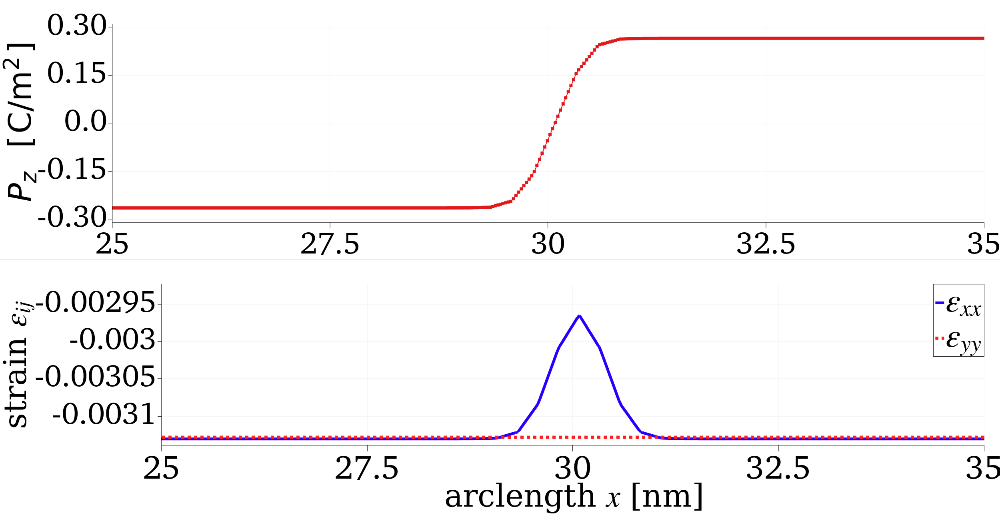

List of tutorials
All tutorials are written assuming that you are reasonably familiar with MOOSE. If you find most of the tutorials difficult to follow, please refer to the official MOOSE website for learning resources.
Tutorial 2: Ferroelectric domain wall
This tutorial gives an example on how to compute the domain wall (DW) profile of (BTO) at room temperature ( K) in FERRET. In this problem (as opposed to Tutorial 1), the polarization is coupled to the elastic strain field via electrostrictive coupling appropriate for BTO. The variable is the component of the elastic displacement vector . The total free energy density is
for the bulk, elastic, gradient, electrostrictive, and electrostatic free energies respectively. The expected DW plane configuration is (100) or equivalent directions so we choose a computational geometry as follows,
[Mesh]
[gen]
type = GeneratedMeshGenerator
dim = 3
nx = ${n_z}
ny = ${n_xy}
nz = ${n_xy}
xmin = -${Z}
xmax = ${Z}
ymin = -${L}
ymax = ${L}
zmin = -${L}
zmax = ${L}
elem_type = HEX8
[]
[./cnode]
input = gen
type = ExtraNodesetGenerator
coord = '-${Z} -${L} -${L}'
new_boundary = 100
[../]
[]
where and are chosen accordingly such that the mesh spacing nm. In general, the geometry defined in the 'Mesh' block never carries units. The length scale is introduced through Materials, Kernels, or other MOOSE objects. For this problem, the length scale is introduced through the units in the Materials objects that connect to the Kernels. Ferret uses a special base units system (aC, kg, nm, sec) for a number of problems related to ground state prediction. Note that for BTO, . This unit system choice reduces the load quite extensively on the PETSc solvers to iterate the problem. To simulate the DW texture, we choose a profile for with the ICs block inside the Variables block as,
[Variables]
[./u_x]
[../]
[./u_y]
[../]
[./u_z]
[../]
[./global_strain]
order = SIXTH
family = SCALAR
[../]
[./polar_x]
order = FIRST
family = LAGRANGE
[./InitialCondition]
type = RandomIC
min = -1e-5
max = 1e-5
seed = 1
[../]
block = '0'
[../]
[./polar_y]
order = FIRST
family = LAGRANGE
[./InitialCondition]
type = RandomIC
min = -1e-5
max = 1e-5
seed = 2
[../]
block = '0'
[../]
[./polar_z]
order = FIRST
family = LAGRANGE
[./InitialCondition]
type = FunctionIC
function = DW_func
[../]
block = '0'
[../]
[./potential_E_int]
order = FIRST
family = LAGRANGE
block = '0'
[../]
[]
where the FunctionIC defines a function called DW_func with,
Other variables , and are also solved for. This tutorial problem evolves the time-dependent Landau-Ginzburg-Devonshire equation (TDLGD),
to find the ground state with (arbitrary time scale). We also solve (at every time step) the conditions for electrostatic (Poisson equation) and mechanical equilibrium (stress divergence),
with a background dielectric permittivity. The variational derivatives of the total free energy density yield residual and jacobian contributions that are computed within the Kernels block,
[Kernels]
### Operators for the polar field: ###
[./bed_x]
type = BulkEnergyDerivativeEighth
variable = polar_x
component = 0
block = '0'
[../]
[./bed_y]
type = BulkEnergyDerivativeEighth
variable = polar_y
component = 1
block = '0'
[../]
[./bed_z]
type = BulkEnergyDerivativeEighth
variable = polar_z
component = 2
block = '0'
[../]
[./walled_x]
type = WallEnergyDerivative
variable = polar_x
component = 0
block = '0'
[../]
[./walled_y]
type = WallEnergyDerivative
variable = polar_y
component = 1
block = '0'
[../]
[./walled_z]
type = WallEnergyDerivative
variable = polar_z
component = 2
block = '0'
[../]
[./elastic_polar_coupled_x]
type = CubicParentElasticPDerivative
variable = polar_x
component = 0
block = '0'
[../]
[./elastic_polar_coupled_y]
type = CubicParentElasticPDerivative
variable = polar_y
component = 1
block = '0'
[../]
[./elastic_polar_coupled_z]
type = CubicParentElasticPDerivative
variable = polar_z
component = 2
block = '0'
[../]
[./polar_x_electric_E]
type = PolarElectricEStrong
variable = potential_E_int
block = '0'
[../]
[./FE_E_int]
type = Electrostatics
variable = potential_E_int
block = '0'
[../]
[./polar_electric_px]
type = PolarElectricPStrong
variable = polar_x
component = 0
block = '0'
[../]
[./polar_electric_py]
type = PolarElectricPStrong
variable = polar_y
component = 1
block = '0'
[../]
[./polar_electric_pz]
type = PolarElectricPStrong
variable = polar_z
component = 2
block = '0'
[../]
[./polar_x_time]
type = TimeDerivativeScaled
variable = polar_x
time_scale = 1.0
block = '0'
[../]
[./polar_y_time]
type = TimeDerivativeScaled
variable = polar_y
time_scale = 1.0
block = '0'
[../]
[./polar_z_time]
type = TimeDerivativeScaled
variable = polar_z
time_scale = 1.0
block = '0'
[../]
[]
The weak-form algebra required for setting up these objects are provided in the FERRET syntax list. An interested user may click the hyperlinks here:
TDLGD:
Poisson equation:
Mechanical equilibrium:
SolidMechanics(MOOSEAction) for
for the different objects. The electrostrictive coupling to the mechanics enters through the Materials block as an eigenstrain rather than through a separate coupling kernel, so no ElectrostrictiveCoupling* kernel appears in this input file. Note that the Materials block via
[Materials]
[./eigen_strain]
type = ComputeEigenstrain
#xx yy zz (xy yz xz)
eigen_base = '0.0 0.0 0.0 0.0 0.0 0.0'
eigenstrain_name = 'epitaxy'
block = '0'
[../]
[./Landau_P]
type = GenericConstantMaterial
prop_names = 'alpha1 alpha11 alpha12 alpha111 alpha112 alpha123 alpha1111 alpha1112 alpha1122 alpha1123'
prop_values = '-0.03635 -0.2097 0.7974 1.294 -1.95 -2.5 38.63 25.29 16.37 13.67'
block = '0'
[../]
[./Landau0_G_FE]
type = GenericConstantMaterial
prop_names = 'G110 G11_G110 G12_G110 G44_G110 G44P_G110'
prop_values = '${G110} ${G11_G110} ${G12_G110} ${G44_G110} ${G44P_G110}'
block = '0'
[../]
[./mat_C]
type = GenericConstantMaterial
prop_names = 'C11 C12 C44'
prop_values = '178.0 96.4 122.0'
block = '0'
[../]
[./mat_Q]
#this is slightly different from Phys Rev B 89, 174111 (2014) ?
type = GenericConstantMaterial
prop_names = 'Q11 Q12 Q44'
prop_values = '0.10 -0.045 0.029' #0.059/4?
block = '0'
[../]
[./elasticity_tensor_1]
type = ComputeElasticityTensor
fill_method = symmetric9
C_ijkl = '178.0 96.4 96.4 178.0 96.4 178.0 122.0 122.0 122.0'
block = '0'
[../]
[./film_eigenstrain]
type = CompositeEigenstrain
## NOTE: 'flexo' carried weight2 = -1, so dropping it is not a no-op.
tensors = 'ferro epitaxy'
weights = 'weight1 weight3'
eigenstrain_name = total_eigenstrain
coupled_variables = 'polar_x polar_y polar_z'
block = '0'
[../]
[./weight1]
type = DerivativeParsedMaterial
block = '0'
expression = '1'
property_name = weight1
coupled_variables = 'polar_x polar_y polar_z'
[../]
[./weight3]
type = DerivativeParsedMaterial
block = '0'
expression = '1'
property_name = weight3
[../]
[./stress_1]
type = ComputeLinearElasticStress
block = '0'
[../]
[./electrostrictive_eigenstrain]
type = ComputeCubicParentElectrostrictiveStrain
polar_x = polar_x
polar_y = polar_y
polar_z = polar_z
eigenstrain_name = 'ferro'
block = '0'
[../]
[./permitivitty]
###############################################
##
## BTO background permittivity 45 (used in flexo paper)
##
###############################################
type = GenericConstantMaterial
prop_names = 'permittivity'
prop_values = '0.39'
block = '0'
[../]
[]
We utilize the GlobalStrain system implemented in MOOSE to ensure periodicity of the strain tensor components along the long direction of the box (). This introduces a ScalarKernel,
with the computational volume. We find a set of global displacement vectors disp_x, disp_y, disp_z (see AuxKernels) such that the above condition is satisfied (see Biswas et al. (2020) for an extended description of the method). In the input file, these objects are generated by the GlobalStrain action,
[./GlobalStrain]
[./global_strain]
scalar_global_strain = global_strain
displacements = 'u_x u_y u_z'
auxiliary_displacements = 'disp_x disp_y disp_z'
global_displacements = 'ug_x ug_y ug_z'
[../]
[../]
The action creates the ScalarKernel, its associated user object and the auxiliary displacement fields automatically, so no explicit ScalarKernels or UserObjects entries are required for the global strain system. It works together with the BCs block,
[BCs]
[./Periodic]
[./x]
auto_direction = 'x y z'
variable = 'u_x u_y u_z polar_x polar_y polar_z potential_E_int'
[../]
[../]
# fix center point location
[./centerfix_x]
type = DirichletBC
boundary = 100
variable = u_x
value = 0
[../]
[./centerfix_y]
type = DirichletBC
boundary = 100
variable = u_y
value = 0
[../]
[./centerfix_z]
type = DirichletBC
boundary = 100
variable = u_z
value = 0
[../]
[]
which ensures the appropriate periodicity along the long direction of the box. We find that setting periodicity along the and directions does not influence the system variables and is a redundant boundary condition. This problem also has a number of AuxVariables to store the elastic strain and global displacement fields. Finally, it should be noted that in the UserObjects block, we also include a Terminator object which kills the problem when the relative change of the total energy between adjacent time steps is less than . The wall clock time of this problem is 316.8 secs on 6 processors. After the problem is solved, a typical output can be viewed in ParaView as below.

Figure 1: Top: across the DW region. Bottom: Variation of and along the same arclength () in nanometers.
showing the thickness of the DW region along with the variations of the spontaneous strains and . The resulting order parameters in the homogeneous region are , and normal strains and which is in good agreement with the results of Hlinka and Marton (2006). The thickness, which can be calculated by fitting to a profile, agrees well with the calculations from Marton et al. (2010) which highlights a number of a different BTO DWs as a function of temperature.
In principle, this type of calculation can be generalized to any ferroic material (i.e. ferromagnets or multiferroics) to study the DW textures of order parameters in the presence of additional couplings (for example magnetoelasticity or the flexoelectric coupling to gradients in the strain field).
References
- Sudipta Biswas, Daniel Schwen, and Jason D. Hales.
Development of a finite element based strain periodicity implementation method.
Finite Elements Anal. Design, 179:103436, 2020.[Export]
- J. Hlinka and P. Marton.
Phenomenological model of a domain wall in BaTiO₃-type ferroelectrics.
Physical Review B, 2006.[Export]
- P. Marton, I. Rychetsky, and J. Hlinka.
Domain walls of ferroelectric BaTiO₃ within the Ginzburg-Landau-Devonshire phenomenological model.
Phys. Rev. B, 81:144125, 2010.[Export]